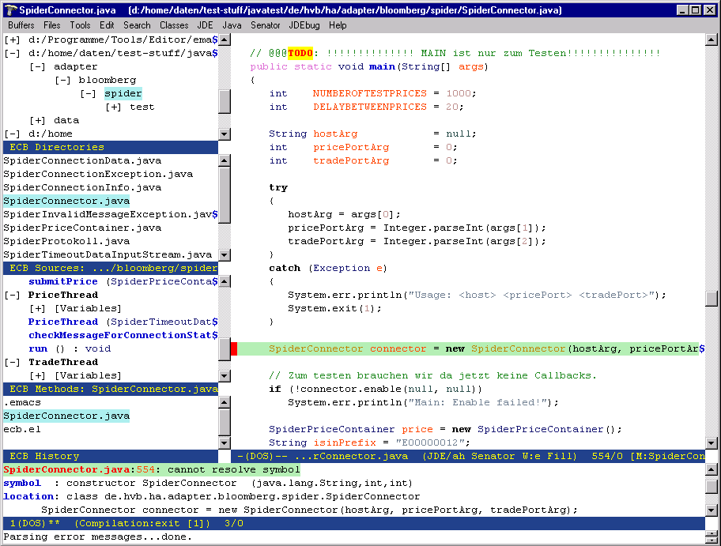
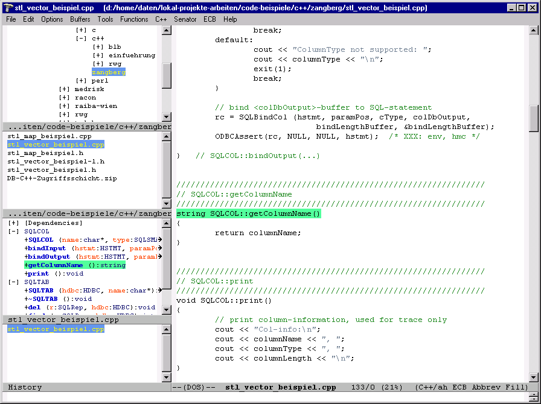
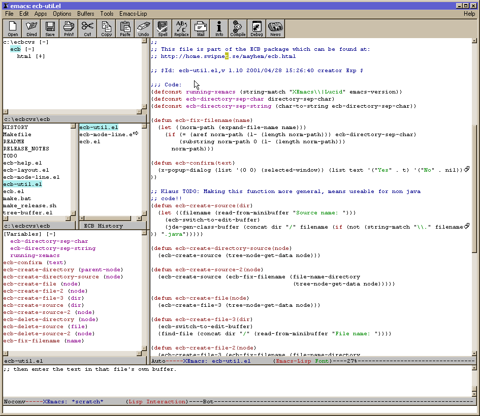

| ECB 1.60 running in Emacs 21 showing fields and inner classes in a Java source file |
|  |
| ECB 1.60 running in Emacs 21 showing two classes in a C++ source file |
|  |
| ECB running in XEmacs under Windows 98 showing an emacs-lisp source file |
|  |
| ECB 1.0 running in GNU Emacs under Windows 98 |
|